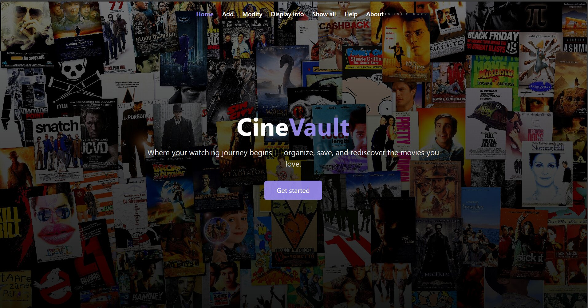
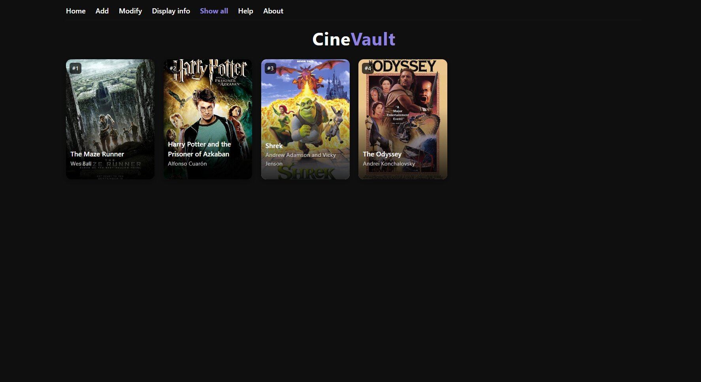

Computer engineering · Applied AI
Amani Ibrahim
Carbonell.
University of South FloridaB.S. Computer EngineeringMinor in Biomedical PhysicsMay 2028
Two classification tasks. One emphasis on careful evaluation.
RÉSUMÉ
Experience, education, and projects.
Computer Engineering · Biomedical Physics minor · May 2028
01 / SELECTED RESEARCH
Emergency images, examined closely.
A research project exploring image classification as a component of a proposed emergency-reporting system for Puerto Rico.
AI-based emergency image classification
Undergraduate Researcher · Polytechnic University of Puerto Rico
Undergraduate Research Program for Honor Students · HSI STEM Grant
2025—2026 / RESEARCH STUDY
AI-based emergency image classification
Undergraduate Researcher · Polytechnic University of Puerto Rico
Undergraduate Research Program for Honor Students · HSI STEM Grant
Four categories. Overlapping scenes.
I curated a dataset from six public sources, trained an ImageNet-pretrained EfficientNet-B0 model, and evaluated Fire, Flood, Infrastructure Damage, and Road Emergency predictions.
The final validation set contained 388 images. The model classified 365 correctly. Its largest confusion was between infrastructure damage and road emergencies: 12 infrastructure images were assigned to Road Emergency.
1,561 training / 388 validation images
Stratified 80/20 split · CPU training
Image augmentation · Precision, recall & F1
| Actual ↓ / Predicted → | Fire | Flood | Infra. | Road |
|---|---|---|---|---|
| Fire | 95 | 0 | 1 | 1 |
| Flood | 0 | 98 | 1 | 2 |
| Infrastructure | 1 | 2 | 82 | 12 |
| Road | 0 | 2 | 1 | 90 |
Reported validation counts. Darker cells indicate larger counts.
Infra. = Infrastructure Damage. Road = Road Emergency.
Severity needs more than a headline score.
I developed a second EfficientNet-B0 model for Mild Damage versus Severe Damage using a modified, supplemented CrisisMMD-based dataset. Training used class-weighted cross-entropy and staged fine-tuning.
The best validation accuracy across training was 79.57%. The final Stage 2 pass shown here classified 431 of 558 images correctly (77.24%). These results describe different checkpoints.
2,289 training / 558 validation images
Final-pass macro F1: 0.75
Final-pass severe recall: 0.79
| Actual ↓ / Predicted → | Mild | Severe |
|---|---|---|
| Mild Damage | 125 | 45 |
| Severe Damage | 82 | 306 |
82 severe images were predicted as mild in the final pass. This failure mode supports further research into human review and clearer severity criteria.
My contribution and engineering decisions
I prepared and curated datasets, implemented two CNN classifiers in Python with PyTorch and Torchvision, applied transfer learning and task-specific training procedures, analyzed validation results, and authored the research report. I also designed a MySQL-compatible relational schema linking image metadata with hazard and severity prediction records. The schema was a design prototype and was not integrated with the trained models.
What changed during development
Early event-based CrisisMMD experiments exposed a mismatch between social-media labels and the intended image-only operational categories. I moved to a curated four-category dataset and used EfficientNet-B0 for computational practicality on CPU. The severity task evolved from three classes to two, followed by class weighting and selective fine-tuning. Several factors changed together, so performance differences do not isolate the effect of any one intervention.
Evaluation limits and next steps
These are validation results used during model development, not an independent external test or evidence of deployed emergency-response performance. The hazard dataset included synthetic road-emergency examples from one source. Severity labels remained subjective, and the tasks used different datasets, so their accuracy figures are not a direct benchmark. The next steps are independent Puerto Rico data, clearer annotation criteria, and confidence-based human review.
Research context and source
This case study summarizes my contribution to research conducted at the Polytechnic University of Puerto Rico. It is based on my 2026 final report, “Design and Development of an Intelligent Emergency State Reporting System for Puerto Rico.” Original institutional code, model files, and curated datasets are not distributed on this website. The scene illustration above is schematic; this website does not run an emergency classifier.
SOFTWARE PROJECT
Software projects
CineVault — Movie Inventory
CECS 3210 · Advanced Programming class project
CineVault — Movie Inventory
CECS 3210 · Advanced Programming class project
A web application for adding, browsing, editing, and deleting movies. Includes movie-ID lookup, duplicate checks, input validation, and a local database.


02 / HOW I WORK
The decisions behind the model.
Start with the data and the task.
I examine whether labels and image content support the decision a model is intended to make. Dataset size alone does not establish relevance.
Build within real constraints.
CPU-based training shaped my architecture choice and fine-tuning strategy. I used transfer learning to work within the available compute.
Look at the errors.
I use per-class metrics and confusion matrices to explain failure patterns, and document what a validation result can—and cannot—support.
03 / ABOUT
Engineering with an interest in human impact.
I’m pursuing a B.S. in Computer Engineering at the University of South Florida, with a minor in Biomedical Physics. My technical interests include applied machine learning, computer vision, and biomedical applications.
Alongside research, I have worked as a university mathematics tutor and in client-facing roles. Those experiences inform how I explain technical ideas and work with people.
Programming and tools
Python · C++ · Java · SQL / MySQL · MATLAB · NumPy
Applied machine learning
PyTorch · Torchvision · CNNs · Transfer learning · Image augmentation · Dataset preparation
Evaluation and communication
Precision and recall · F1-score · Confusion matrices · Research writing · Technical documentation
Seeking
Internships in AI / ML, computer vision, software engineering, and applied research.
OPEN TO INTERNSHIP OPPORTUNITIES
Let’s talk about the work.
Explore my experience, browse my code, or connect on LinkedIn.